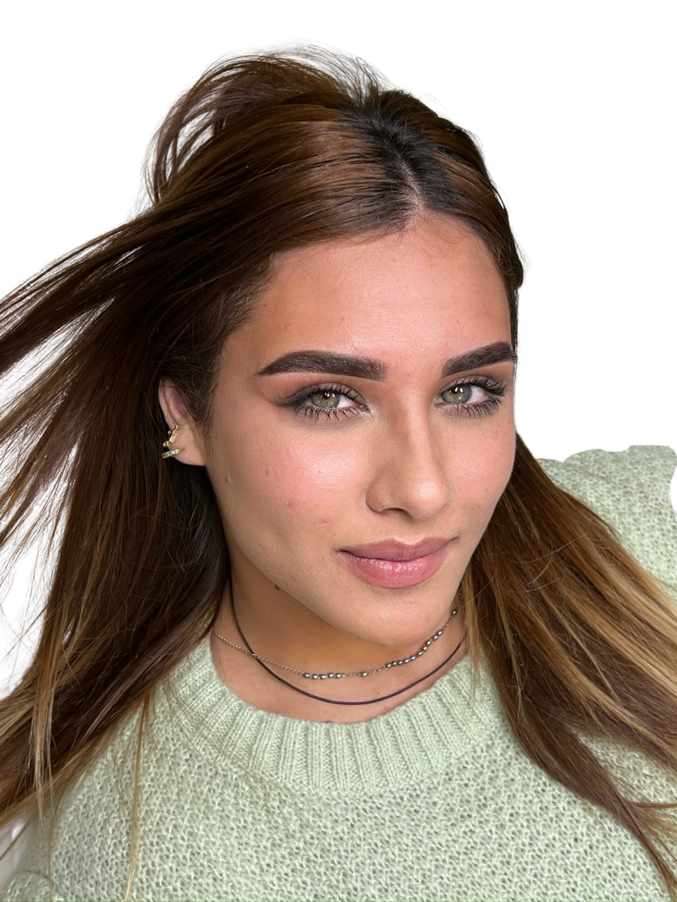
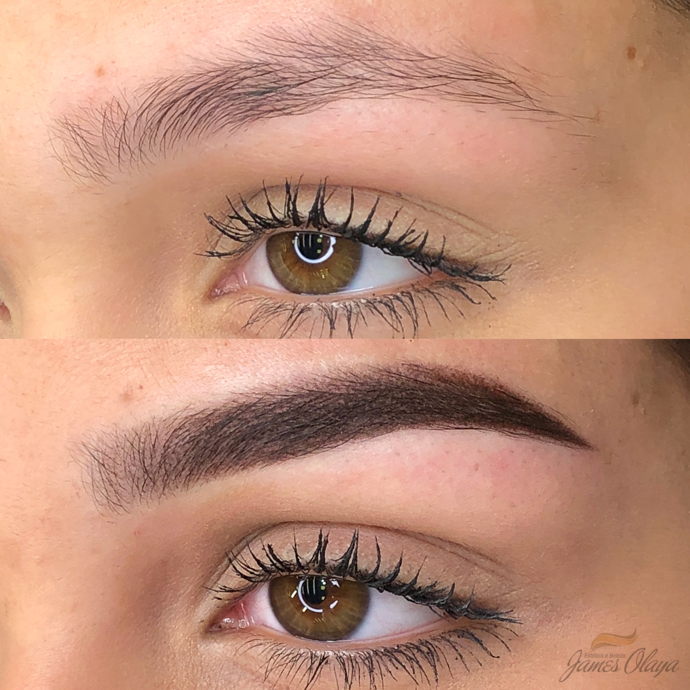
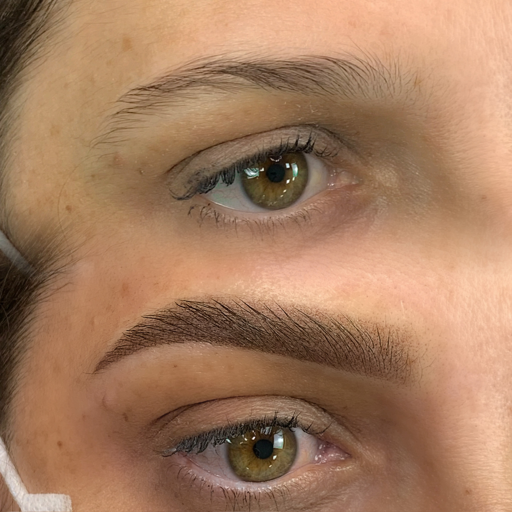
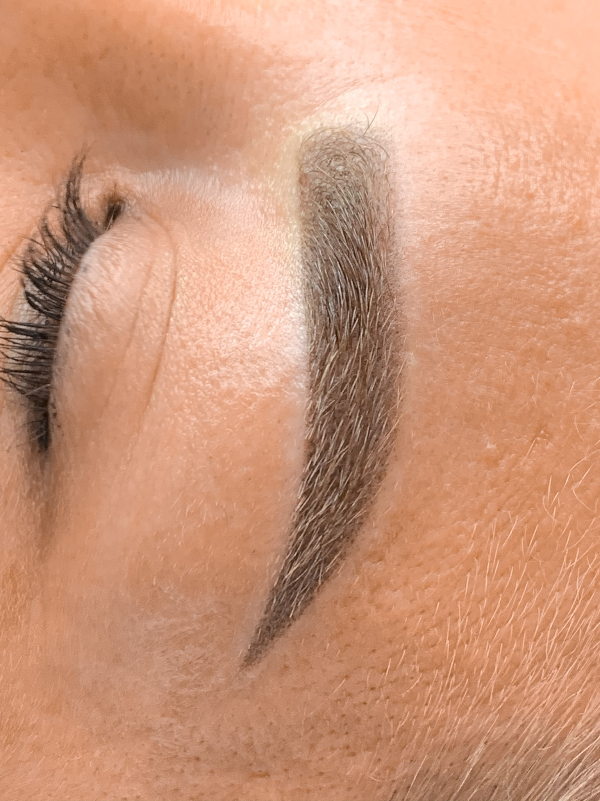
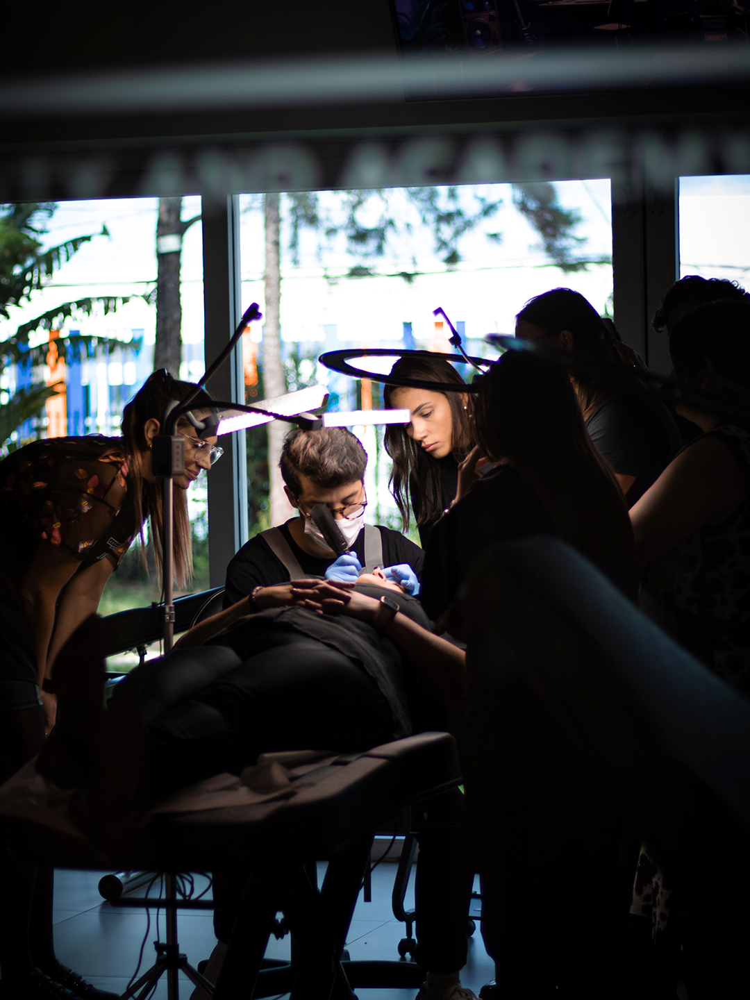
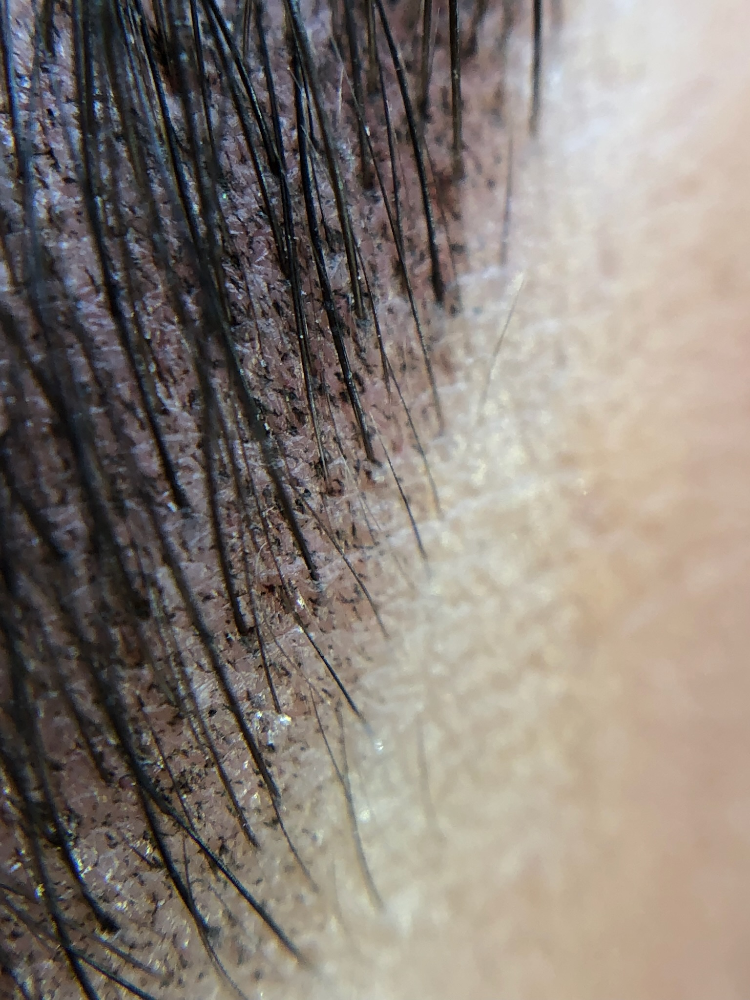
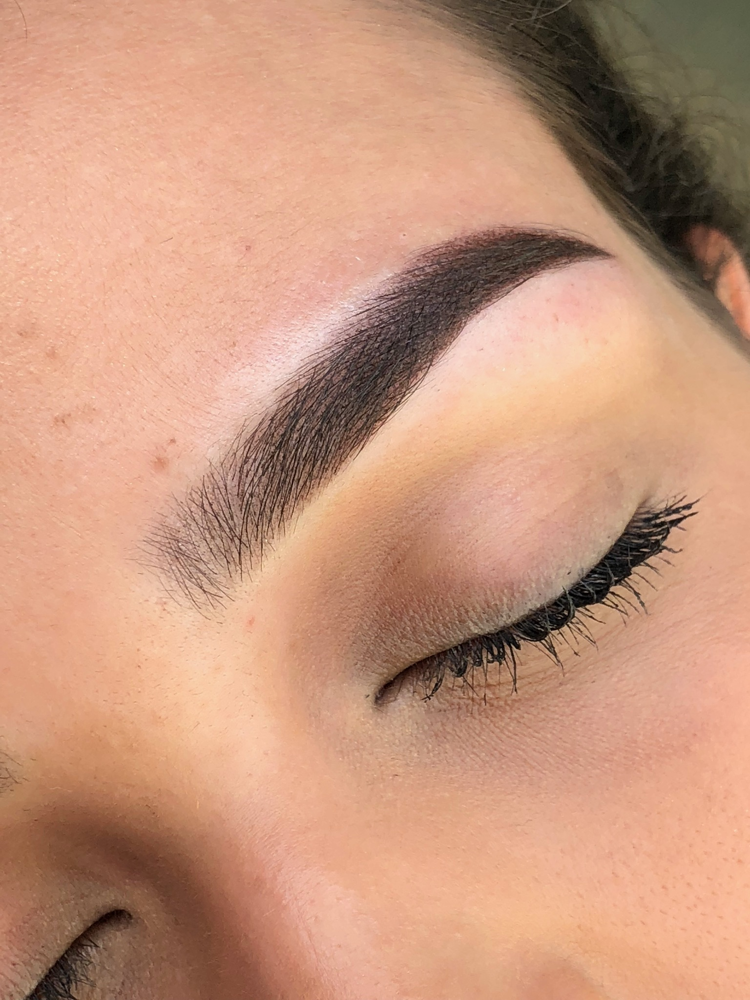

Efeito soft makeup
Preenche falhas e falta de pelos com suavidade

FORMAÇÃO AVANÇADA EM MICROPIGMENTAÇÃO
Enquanto o mercado evolui muitas profissionais ainda estão presas em técnicas pesadas.
Jay MAGIC SHADOW é uma formação avançada para você que não quer parar no tempo em um mercado cada vez mais sofisticado.
Preenche falhas e falta de pelos com suavidade
Praticidade e uma estética leve para qualquer ocasião
A grande tendência internacional é o famoso "menos é mais"
Agora você se pergunta...
Como obter sucesso com a técnica shadow mantendo a naturalidade?

Rússia e Europa
elevaram o nível técnico da
micropigmentação.
As artistas mais sofisticadas do mercado
não trabalham apenas “sombra”.
É isso que cria sombras leves, sofisticadas e visualmente premium mesmo após a cicatrização.
— O DIFERENCIAL DO MAGIC SHADOW —
Controle de densidade, expansão e leveza visual.
Bordas sofisticadas e transições invisíveis.
Menos agressão dérmica. Mais estabilidade estética.
Sombras planejadas para envelhecer com elegância.
— O RISCO DE NÃO EVOLUIR —
A cliente premium não escolhe apenas “quem faz shadow”.
Ela escolhe:
Quando o resultado parece refinado…
o valor percebido muda completamente.
E junto com ele:
— o que era —
marca · sobressai · pesa
— o que o mercado busca —
A nova estética da micropigmentação valoriza:
O peso visual está sendo substituído por construção inteligente?
— provas & evolução —
O Magic Shadow foi criado para artistas que entenderam que evolução não é opcional em um mercado premium.






O Magic Shadow não atualiza apenas sua técnica.
Você desenvolve:
Porque hoje, não basta apenas executar.
É preciso evoluir visualmente junto com o mercado.
O QUE VOCÊ VAI DOMINAR
Formação avançada para artistas que buscam excelência técnica.
Dúvidas Frequentes
Sim. O Magic Shadow foi criado principalmente para profissionais que já atuam e desejam evoluir tecnicamente.
Sim. O foco do método é justamente construir sombras sofisticadas, leves e estrategicamente translúcidas.
Sim. O método trabalha biomecânica da mão, controle de trauma, profundidade e comportamento dérmico.
Sim. O curso possui módulos específicos para peles difíceis e controle estratégico de densidade.
Sim. A estrutura foi construída com base em referências russas, europeias e nos novos padrões premium do mercado global.
A nova geração já está em ação
by JAMES OLAYA
O Jay Magic Shadow foi criado para quem decidiu
não ficar para trás.
As artistas que dominarem leveza, sofisticação e previsibilidade estética serão as profissionais mais valorizadas da nova geração da micropigmentação.
Quero entrar para a nova
geração do shadow premium